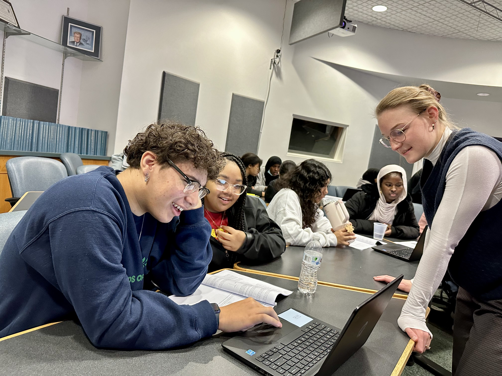

Outreach
Introduction to Astrophysics Workshop
I firmly believe that the wonders of astrophysics should be accessible to everyone. It is not a prerequisite to possess an extensive background in high-level mathematics or physics to appreciate the amazing ideas this field has to offer. Regrettably, there is a prevalent misconception that tends to discourage individuals, particularly young minds, from engaging with astrophysics and its related disciplines like mathematics and physics. I am driven break this assumption and to establish avenues that enable young individuals to immerse themselves in the world of astrophysics, regardless of their prior experience. To do this, in collaboration with Marko Ristić, we have crafted a comprehensive introductory astrophysics curriculum. This curriculum takes the form of a three-part workshop series, where each segment introduces a distinct facet of astrophysical research. Through a blend of engaging lectures and hands-on lab exercises using Python, we aim to ignite curiosity and empower participation. To learn more about this workshop, follow the link below.

Haylli Yunga - Ossining High School
Haylli is a rising junior at Ossining High School. Together, our goal is to implement compact binary merger waveform solutions that will work well with RIFT, a parameter estimation pipeline. These solutions will take into account both eccentric and precessing effects. Parameters related to these effects can be difficult to measure accurately as they may be difficult to distinguish from each other. Detecting the presence of these effects in gravitational wave signals may enable astrophysical inferences about the origin of certain compact binary mergers. Currently, there are no existing waveform solutions readily available to parameter estimation pipelines that incorporate both of these effects. Our work will enable parameter estimation for compact binary mergers to include these important parameters and draw astrophysical conclusions from gravitational wave signals.